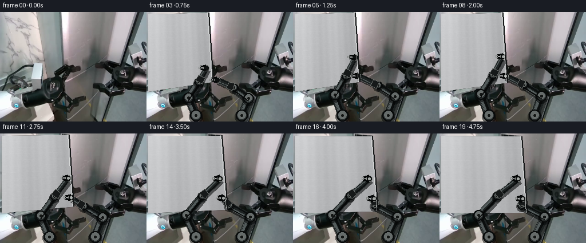
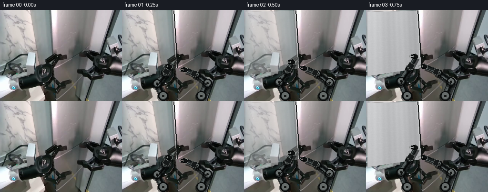
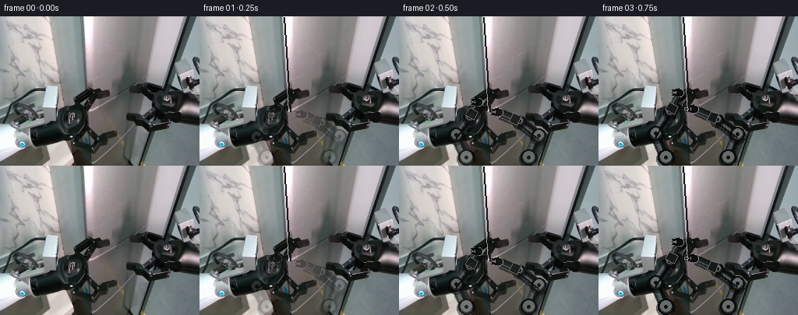

CODING AGENTS AS PIXEL WORLD MODELS
traex/GPT-5.6-Sol · common50_0008
点击播放 · 原生 RGB 像素
逐轮保存的候选
回放视频、检查图与代码变化。
每份候选均可单独播放。实际图片检查记录在下方工具轨迹中。
候选 01播放与检查图
点击播放 · 原生 RGB 像素

展开代码变化
--- 上一保存版本
+++ 本次保存版本
@@ -0,0 +1,151 @@
+from pathlib import Path
+import numpy as np
+import cv2
+from PIL import Image, ImageDraw
+import artifact_io
+
+ROOT = Path(__file__).resolve().parent
+W,H = 256,192
+base = np.asarray(Image.open(ROOT/'first_frame.png').convert('RGB'), dtype=np.uint8)
+assert base.shape == (H,W,3)
+
+def smoothstep(x):
+ x=np.clip(x,0.,1.); return x*x*(3-2*x)
+
+def poly_mask(points, blur=0):
+ m=np.zeros((H,W),np.uint8)
+ cv2.fillConvexPoly(m,np.asarray(points,np.int32),255,lineType=cv2.LINE_AA)
+ if blur: m=cv2.GaussianBlur(m,(0,0),blur)
+ return m.astype(np.float32)/255.
+
+def composite(dst, src, mask):
+ a=mask[...,None]
+ return dst*(1-a)+src*a
+
+def silver_door_texture(frame, q, pts):
+ # Perspective-correct planar brushed aluminum, illuminated consistently.
+ p=np.asarray(pts,np.float32)
+ src=np.float32([[0,0],[119,0],[119,156],[0,156]])
+ M=cv2.getPerspectiveTransform(src,p)
+ yy,xx=np.mgrid[0:157,0:120]
+ rng=np.random.default_rng(807)
+ fine=rng.normal(0,1,(157,120)).astype(np.float32)
+ fine=cv2.GaussianBlur(fine,(0,0),.6)
+ vertical=5*np.sin(xx*.105)+2*np.sin(xx*.51)
+ shade=178 + 22*(1-xx/119) + vertical + fine*2.0 - yy*.085
+ tex=np.zeros((157,120,3),np.float32)
+ tex[:,:,0]=shade+4; tex[:,:,1]=shade+5; tex[:,:,2]=shade+7
+ # subtle horizontal manufacturing strokes
+ tex[::13,:,:]+=2
+ warped=cv2.warpPerspective(tex,M,(W,H),flags=cv2.INTER_LINEAR,borderMode=cv2.BORDER_CONSTANT)
+ mask=cv2.warpPerspective(np.full((157,120),255,np.uint8),M,(W,H),flags=cv2.INTER_LINEAR)/255.
+ return composite(frame,warped,mask), mask
+
+def draw_arm_layer(frame, joints, side, q):
+ # Rigid industrial links: dark cast-metal body, cylindrical knuckles, forked grippers.
+ im=Image.fromarray(np.clip(frame,0,255).astype(np.uint8),'RGB')
+ d=ImageDraw.Draw(im,'RGBA')
+ shoulder, elbow, wrist, tip = [tuple(map(float,p)) for p in joints]
+ def link(a,b,width):
+ ax,ay=a; bx,by=b
+ vx,vy=bx-ax,by-ay; L=max(1,(vx*vx+vy*vy)**.5); nx,ny=-vy/L,vx/L
+ # stable rigid shadow and multi-tone tubular segment
+ d.line([(ax+2,ay+3),(bx+2,by+3)],fill=(3,5,5,145),width=width+5)
+ d.line([a,b],fill=(29,34,34,255),width=width+2)
+ d.line([(ax-nx*2,ay-ny*2),(bx-nx*2,by-ny*2)],fill=(88,96,96,235),width=max(2,width//3))
+ d.line([(ax+nx*3,ay+ny*3),(bx+nx*3,by+ny*3)],fill=(11,14,14,255),width=max(2,width//3))
+ # straight chassis rail accent
+ d.line([(ax-nx*5,ay-ny*5),(bx-nx*5,by-ny*5)],fill=(119,125,124,150),width=1)
+ link(shoulder,elbow,13); link(elbow,wrist,11); link(wrist,tip,8)
+ for idx,(x,y) in enumerate([shoulder,elbow,wrist]):
+ r=(10,9,7)[idx]
+ d.ellipse((x-r-2,y-r,x+r+2,y+r+4),fill=(3,5,5,135))
+ d.ellipse((x-r,y-r,x+r,y+r),fill=(38,43,43,255),outline=(8,10,10,255),width=2)
+ d.ellipse((x-r+3,y-r+2,x+r-3,y+r-4),fill=(105,111,110,240))
+ d.ellipse((x-3,y-3,x+3,y+3),fill=(18,21,20,255),outline=(150,154,151,180))
+ # wrist tool collar
+ x,y=wrist; tx,ty=tip; vx,vy=tx-x,ty-y; L=max(1,(vx*vx+vy*vy)**.5); nx,ny=-vy/L,vx/L
+ d.polygon([(x+nx*7,y+ny*7),(x-nx*7,y-ny*7),(x+vx/L*11-nx*6,y+vy/L*11-ny*6),(x+vx/L*11+nx*6,y+vy/L*11+ny*6)],fill=(22,25,25,255),outline=(125,129,126,210))
+ # both grippers are forked and inserted into the same vertical seam at two heights
+ x,y=tip
+ open_amt=1.8 + 1.8*q
+ d.ellipse((x-5,y-5,x+5,y+5),fill=(14,16,16,255),outline=(143,146,142,255),width=1)
+ # jaws point left into seam, then visibly pry toward camera/right
+ for sy in (-1,1):
+ oy=sy*(2+open_amt)
+ d.line([(x-1,y+oy),(x-10,y+sy*2)],fill=(6,8,8,255),width=4)
+ d.line([(x-10,y+sy*2),(x-13,y+sy*1)],fill=(129,133,130,255),width=2)
+ # small hydraulic hose follows link without deforming chassis
+ ex,ey=elbow; wx,wy=wrist
+ d.line([(ex,ey+5),(wx,wy+5)],fill=(5,6,6,230),width=2)
+ return np.asarray(im).astype(np.float32)
+
+def make_frame(i):
+ if i==0: return base.copy()
+ t=i/19.0
+ # Arms settle into the seam early, then synchronously lever it open.
+ reach=smoothstep(t/0.30)
+ pry=smoothstep((t-0.30)/0.70)
+ frame=base.astype(np.float32)
+
+ # Door is the large left silver cabinet face. Its hinge is on the left edge;
+ # opening is rendered as a coherent planar perspective transform.
+ hinge_top=np.array([3.,4.]); hinge_bot=np.array([3.,139.])
+ seam_top=np.array([108.,1.]); seam_bot=np.array([116.,122.])
+ out=np.array([35.*pry, 4.*pry])
+ # dark cabinet interior revealed continuously along the original seam
+ gap_pts=[seam_top, seam_bot, seam_bot+out+np.array([2,12])*pry, seam_top+out]
+ gm=poly_mask(gap_pts,0.6)
+ yy,xx=np.mgrid[0:H,0:W]
+ interior=np.empty_like(frame)
+ interior[:,:,0]=16+8*(yy/H); interior[:,:,1]=19+9*(yy/H); interior[:,:,2]=20+10*(yy/H)
+ # vertical internal rack details, only exposed through gap
+ for x in range(110,154,10):
+ interior[:,x:x+2,:]=np.array([58,62,60])
+ frame=composite(frame,interior,gm)
+
+ door_pts=[hinge_top, seam_top+out, seam_bot+out+np.array([2,12])*pry, hinge_bot]
+ frame,_=silver_door_texture(frame,pry,door_pts)
+ # Reuse original appearance heavily near frame start for exact visual continuity.
+ if i<=2:
+ a=(i/3.0)**2
+ frame=base*(1-a)+frame*a
+
+ # contact targets track the rigid door edge
+ upper_target=np.array([109.,78.])+out*np.array([.82,.48])
+ lower_target=np.array([113.,112.])+out*np.array([.92,.68])
+ # two arms originate from fixed pedestal points at the bottom of workspace.
+ # Interpolate each joint, preserving straight rigid links at every instant.
+ starts=[
+ (np.array([86.,181.]), np.array([72.,151.]), np.array([89.,126.]), np.array([104.,96.]), upper_target),
+ (np.array([166.,181.]),np.array([178.,151.]),np.array([155.,133.]),np.array([129.,121.]),lower_target)
+ ]
+ # initial pose endpoints/joints versus engaged configuration
+ for side,(shoulder,e0,e1,w1,target) in enumerate(starts):
+ if side==0:
+ e_start=np.array([74.,156.]); w_start=np.array([90.,137.]); tip_start=np.array([100.,123.])
+ e_eng=np.array([73.,145.]); w_eng=np.array([93.,111.])
+ else:
+ e_start=np.array([180.,155.]); w_start=np.array([157.,137.]); tip_start=np.array([135.,128.])
+ e_eng=np.array([178.,148.]); w_eng=np.array([148.,128.])
+ elbow=e_start*(1-reach)+e_eng*reach
+ wrist=w_start*(1-reach)+w_eng*reach
+ tip=tip_start*(1-reach)+target*reach
+ # during prying the elbows react slightly in opposite directions, while bases remain fixed
+ elbow += np.array([-5 if side==0 else 5,-2])*pry
+ wrist += np.array([7 if side==0 else -5,-2])*pry
+ frame=draw_arm_layer(frame,[shoulder,elbow,wrist,tip],side,pry)
+
+ # crisp moving door-edge seam and contact glints
+ im=Image.fromarray(np.clip(frame,0,255).astype(np.uint8),'RGB'); d=ImageDraw.Draw(im,'RGBA')
+ et=tuple((seam_top+out).astype(int)); eb=tuple((seam_bot+out+np.array([2,12])*pry).astype(int))
+ d.line([et,eb],fill=(18,20,20,245),width=2)
+ d.line([(et[0]-2,et[1]),(eb[0]-2,eb[1])],fill=(239,241,239,150),width=1)
+ if pry>.05:
+ for p in (upper_target,lower_target):
+ x,y=p; d.ellipse((x-2,y-2,x+2,y+2),fill=(224,229,224,180))
+ return np.asarray(im,dtype=np.uint8)
+
+frames=np.stack([make_frame(i) for i in range(20)])
+frames[0]=base
+artifact_io.save(frames,ROOT)
候选 02播放与检查图
点击播放 · 原生 RGB 像素


展开代码变化
--- 上一保存版本
+++ 本次保存版本
@@ -23,22 +23,21 @@
return dst*(1-a)+src*a
def silver_door_texture(frame, q, pts):
- # Perspective-correct planar brushed aluminum, illuminated consistently.
+ # Move the actual door pixels from frame zero as one perspective-rigid plane.
+ # This retains all of the source photograph's brushed texture and lighting.
+ source=np.float32([[3,4],[108,1],[116,122],[3,139]])
p=np.asarray(pts,np.float32)
- src=np.float32([[0,0],[119,0],[119,156],[0,156]])
- M=cv2.getPerspectiveTransform(src,p)
- yy,xx=np.mgrid[0:157,0:120]
- rng=np.random.default_rng(807)
- fine=rng.normal(0,1,(157,120)).astype(np.float32)
- fine=cv2.GaussianBlur(fine,(0,0),.6)
- vertical=5*np.sin(xx*.105)+2*np.sin(xx*.51)
- shade=178 + 22*(1-xx/119) + vertical + fine*2.0 - yy*.085
- tex=np.zeros((157,120,3),np.float32)
- tex[:,:,0]=shade+4; tex[:,:,1]=shade+5; tex[:,:,2]=shade+7
- # subtle horizontal manufacturing strokes
- tex[::13,:,:]+=2
- warped=cv2.warpPerspective(tex,M,(W,H),flags=cv2.INTER_LINEAR,borderMode=cv2.BORDER_CONSTANT)
- mask=cv2.warpPerspective(np.full((157,120),255,np.uint8),M,(W,H),flags=cv2.INTER_LINEAR)/255.
+ M=cv2.getPerspectiveTransform(source,p)
+ warped=cv2.warpPerspective(base.astype(np.float32),M,(W,H),
+ flags=cv2.INTER_LINEAR,
+ borderMode=cv2.BORDER_REFLECT_101)
+ source_mask=np.zeros((H,W),np.uint8)
+ cv2.fillConvexPoly(source_mask,source.astype(np.int32),255,lineType=cv2.LINE_AA)
+ mask=cv2.warpPerspective(source_mask,M,(W,H),flags=cv2.INTER_LINEAR)/255.
+ # A restrained cool metallic reflection grows as the panel turns into the light.
+ reflection=np.zeros((H,W,3),np.float32)
+ reflection[:]=np.array([7.,9.,10.])*q
+ warped=np.clip(warped+reflection,0,255)
return composite(frame,warped,mask), mask
def draw_arm_layer(frame, joints, side, q):
@@ -134,7 +133,11 @@
# during prying the elbows react slightly in opposite directions, while bases remain fixed
elbow += np.array([-5 if side==0 else 5,-2])*pry
wrist += np.array([7 if side==0 else -5,-2])*pry
- frame=draw_arm_layer(frame,[shoulder,elbow,wrist,tip],side,pry)
+ before=frame
+ rendered=draw_arm_layer(frame,[shoulder,elbow,wrist,tip],side,pry)
+ # Smoothly resolve the stylized geometry from the visible source-arm pose.
+ arm_mix=smoothstep(t/.13)
+ frame=before*(1-arm_mix)+rendered*arm_mix
# crisp moving door-edge seam and contact glints
im=Image.fromarray(np.clip(frame,0,255).astype(np.uint8),'RGB'); d=ImageDraw.Draw(im,'RGBA')
候选 03播放与检查图
候选 04播放与检查图
点击播放 · 原生 RGB 像素

展开代码变化
--- 上一保存版本
+++ 本次保存版本
@@ -42,7 +42,7 @@
def draw_arm_layer(frame, joints, side, q):
# Rigid industrial links: dark cast-metal body, cylindrical knuckles, forked grippers.
- im=Image.fromarray(np.clip(frame,0,255).astype(np.uint8),'RGB')
+ im=Image.fromarray(np.rint(np.clip(frame,0,255)).astype(np.uint8))
d=ImageDraw.Draw(im,'RGBA')
shoulder, elbow, wrist, tip = [tuple(map(float,p)) for p in joints]
def link(a,b,width):
@@ -140,7 +140,7 @@
frame=before*(1-arm_mix)+rendered*arm_mix
# crisp moving door-edge seam and contact glints
- im=Image.fromarray(np.clip(frame,0,255).astype(np.uint8),'RGB'); d=ImageDraw.Draw(im,'RGBA')
+ im=Image.fromarray(np.rint(np.clip(frame,0,255)).astype(np.uint8)); d=ImageDraw.Draw(im,'RGBA')
et=tuple((seam_top+out).astype(int)); eb=tuple((seam_bot+out+np.array([2,12])*pry).astype(int))
d.line([et,eb],fill=(18,20,20,245),width=2)
d.line([(et[0]-2,et[1]),(eb[0]-2,eb[1])],fill=(239,241,239,150),width=1)
可观测工具轨迹
实际执行的命令与返回图片。
命令 1exit 0
/bin/bash -lc "cat GENERATION_RULES.md && printf '\\n---PROMPT---\\n' && cat prompt.txt"
命令 2exit 127
/bin/bash -lc "find . -maxdepth 2 -type f -printf '%p\\n' | sort && file first_frame.png"
命令 3exit 0
/bin/bash -lc 'cat task_spec.json'
命令 4exit 0
/bin/bash -lc "sed -n '1,240p' artifact_io.py"
命令 5exit 0
/bin/bash -lc "python - <<'PY'
from PIL import Image
import numpy as np
im=np.array(Image.open('first_frame.png').convert('RGB'))
print(im.shape, im.dtype, im.min(), im.max(), im.mean((0,1)), im.std((0,1)))
# block RGB means 16x12 grid
for y in range(0,192,16):
print('ROW',y, ['%02x%02x%02x'%tuple(im[y:y+16,x:x+16].mean((0,1)).astype(int)) for x in range(0,256,16)])
PY"命令 6exit 0
/bin/bash -lc "python - <<'PY'
try:
import cv2; print('cv2',cv2.__version__)
except Exception as e: print(e)
PY
python - <<'PY'
import cv2,numpy as np
im=cv2.imread('first_frame.png'); gray=cv2.cvtColor(im,cv2.COLOR_BGR2GRAY)
# hough lines
for th in [60,80,100]:
lines=cv2.HoughLinesP(cv2.Canny(gray,50,120),1,np.pi/180,th,minLineLength=25,maxLineGap=5)
print('\\nth',th)
if lines is not None:
ls=[]
for x1,y1,x2,y2 in lines[:,0]:
ln=np.hypot(x2-x1,y2-y1); ang=np.degrees(np.arctan2(y2-y1,x2-x1)); ls.append((round(ln),round(ang,1),x1,y1,x2,y2))
print(*sorted(ls,reverse=True)[:35],sep='\\n')
# edge density by strips
edge=cv2.Canny(gray,50,120)
print('edge counts x',[(x,int(edge[:,x:x+8].sum()/255)) for x in range(0,256,8)])
print('edge counts y',[(y,int(edge[y:y+8].sum()/255)) for y in range(0,192,8)])
PY"命令 7exit 0
/bin/bash -lc "python - <<'PY'
from PIL import Image
import numpy as np
im=np.array(Image.open('first_frame.png').convert('RGB'))
# median luminance and chroma class for 8x8 blocks numerical table
lum=im.mean(2)
chars=' .:-=+*#%@'
for y in range(0,192,6):
s=''
for x in range(0,256,4):
v=np.median(lum[y:y+6,x:x+4]); s+=chars[min(9,int(v*10/256))]
print(f'{y:03} {s}')
PY"命令 8exit 0
/bin/bash -lc "python - <<'PY'
from PIL import Image
import numpy as np
im=np.array(Image.open('first_frame.png').convert('RGB'))
for y in range(0,192,12):
print('\\ny=',y)
for x in range(0,256,8):
a=im[max(0,y-2):min(192,y+3),x:x+8].mean((0,1)).astype(int)
print(f'{x:3}:{a[0]:02x}{a[1]:02x}{a[2]:02x}',end=' ')
print()
PY"命令 9exit 0
/bin/bash -lc "python - <<'PY'
import cv2, numpy as np
from PIL import Image
im=np.array(Image.open('first_frame.png').convert('RGB'))
g=cv2.cvtColor(im,cv2.COLOR_RGB2GRAY)
# print 16x16 mean / std grids
for y in range(0,192,16):
print('Y',y)
for x in range(0,256,16):
a=g[y:y+16,x:x+16]
print(f'{a.mean():3.0f}/{a.std():2.0f}',end=' ')
print()
# connected comps threshold bright/dark
for typ,mask in [('bright',g>180),('dark',g<45),('silver',(np.max(im,2)-np.min(im,2)<12)&(g>80)&(g<220))]:
n,l,stats,cents=cv2.connectedComponentsWithStats(mask.astype(np.uint8),8)
arr=sorted([(s[4],tuple(s[:4]),tuple(np.round(c,1))) for s,c in zip(stats[1:],cents[1:])],reverse=True)[:20]
print('\\n',typ,arr)
# contours canny bounding
ed=cv2.Canny(g,60,140); cnts,_=cv2.findContours(ed,cv2.RETR_LIST,cv2.CHAIN_APPROX_SIMPLE)
arr=[]
for c in cnts:
x,y,w,h=cv2.boundingRect(c); a=cv2.contourArea(c); p=cv2.arcLength(c,False)
if w>10 and h>10: arr.append((round(a),round(p),x,y,w,h))
print('\\ncontours',sorted(arr,reverse=True)[:80])
PY"命令 10exit 0
/bin/bash -lc "python - <<'PY'
import cv2, numpy as np
im=cv2.imread('first_frame.png'); g=cv2.cvtColor(im,cv2.COLOR_BGR2GRAY); e=cv2.Canny(g,50,120)
# max pool 2x3, show edge density
chars=' .:+#'
for y in range(0,192,3):
s=''
for x in range(0,256,2):
n=(e[y:y+3,x:x+2]>0).sum(); s+=chars[min(4,(n+1)//2)]
print(s)
PY"命令 11exit 0
/bin/bash -lc "cat > generate.py <<'PY'
from pathlib import Path
import numpy as np
import cv2
from PIL import Image, ImageDraw
import artifact_io
ROOT = Path(__file__).resolve().parent
W,H = 256,192
base = np.asarray(Image.open(ROOT/'first_frame.png').convert('RGB'), dtype=np.uint8)
assert base.shape == (H,W,3)
def smoothstep(x):
x=np.clip(x,0.,1.); return x*x*(3-2*x)
def poly_mask(points, blur=0):
m=np.zeros((H,W),np.uint8)
cv2.fillConvexPoly(m,np.asarray(points,np.int32),255,lineType=cv2.LINE_AA)
if blur: m=cv2.GaussianBlur(m,(0,0),blur)
return m.astype(np.float32)/255.
def composite(dst, src, mask):
a=mask[...,None]
return dst*(1-a)+src*a
def silver_door_texture(frame, q, pts):
# Perspective-correct planar brushed aluminum, illuminated consistently.
p=np.asarray(pts,np.float32)
src=np.float32([[0,0],[119,0],[119,156],[0,156]])
M=cv2.getPerspectiveTransform(src,p)
yy,xx=np.mgrid[0:157,0:120]
rng=np.random.default_rng(807)
fine=rng.normal(0,1,(157,120)).astype(np.float32)
fine=cv2.GaussianBlur(fine,(0,0),.6)
vertical=5*np.sin(xx*.105)+2*np.sin(xx*.51)
shade=178 + 22*(1-xx/119) + vertical + fine*2.0 - yy*.085
tex=np.zeros((157,120,3),np.float32)
tex[:,:,0]=shade+4; tex[:,:,1]=shade+5; tex[:,:,2]=shade+7
# subtle horizontal manufacturing strokes
tex[::13,:,:]+=2
warped=cv2.warpPerspective(tex,M,(W,H),flags=cv2.INTER_LINEAR,borderMode=cv2.BORDER_CONSTANT)
mask=cv2.warpPerspective(np.full((157,120),255,np.uint8),M,(W,H),flags=cv2.INTER_LINEAR)/255.
return composite(frame,warped,mask), mask
def draw_arm_layer(frame, joints, side, q):
# Rigid industrial links: dark cast-metal body, cylindrical knuckles, forked grippers.
im=Image.fromarray(np.clip(frame,0,255).astype(np.uint8),'RGB')
d=ImageDraw.Draw(im,'RGBA')
shoulder, elbow, wrist, tip = [tuple(map(float,p)) for p in joints]
def link(a,b,width):
ax,ay=a; bx,by=b
vx,vy=bx-ax,by-ay; L=max(1,(vx*vx+vy*vy)**.5); nx,ny=-vy/L,vx/L
# stable rigid shadow and multi-tone tubular segment
d.line([(ax+2,ay+3),(bx+2,by+3)],fill=(3,5,5,145),width=width+5)
d.line([a,b],fill=(29,34,34,255),width=width+2)
d.line([(ax-nx*2,ay-ny*2),(bx-nx*2,by-ny*2)],fill=(88,96,96,235),width=max(2,width//3))
d.line([(ax+nx*3,ay+ny*3),(bx+nx*3,by+ny*3)],fill=(11,14,14,255),width=max(2,width//3))
# straight chassis rail accent
d.line([(ax-nx*5,ay-ny*5),(bx-nx*5,by-ny*5)],fill=(119,125,124,150),width=1)
link(shoulder,elbow,13); link(elbow,wrist,11); link(wrist,tip,8)
for idx,(x,y) in enumerate([shoulder,elbow,wrist]):
r=(10,9,7)[idx]
d.ellipse((x-r-2,y-r,x+r+2,y+r+4),fill=(3,5,5,135))
d.ellipse((x-r,y-r,x+r,y+r),fill=(38,43,43,255),outline=(8,10,10,255),width=2)
d.ellipse((x-r+3,y-r+2,x+r-3,y+r-4),fill=(105,111,110,240))
d.ellipse((x-3,y-3,x+3,y+3),fill=(18,21,20,255),outline=(150,154,151,180))
# wrist tool collar
x,y=wrist; tx,ty=tip; vx,vy=tx-x,ty-y; L=max(1,(vx*vx+vy*vy)**.5); nx,ny=-vy/L,vx/L
d.polygon([(x+nx*7,y+ny*7),(x-nx*7,y-ny*7),(x+vx/L*11-nx*6,y+vy/L*11-ny*6),(x+vx/L*11+nx*6,y+vy/L*11+ny*6)],fill=(22,25,25,255),outline=(125,129,126,210))
# both grippers are forked and inserted into the same vertical seam at two heights
x,y=tip
open_amt=1.8 + 1.8*q
d.ellipse((x-5,y-5,x+5,y+5),fill=(14,16,16,255),outline=(143,146,142,255),width=1)
# jaws point left into seam, then visibly pry toward camera/right
for sy in (-1,1):
oy=sy*(2+open_amt)
d.line([(x-1,y+oy),(x-10,y+sy*2)],fill=(6,8,8,255),width=4)
d.line([(x-10,y+sy*2),(x-13,y+sy*1)],fill=(129,133,130,255),width=2)
# small hydraulic hose follows link without deforming chassis
ex,ey=elbow; wx,wy=wrist
d.line([(ex,ey+5),(wx,wy+5)],fill=(5,6,6,230),width=2)
return np.asarray(im).astype(np.float32)
def make_frame(i):
if i==0: return base.copy()
t=i/19.0
# Arms settle into the seam early, then synchronously lever it open.
reach=smoothstep(t/0.30)
pry=smoothstep((t-0.30)/0.70)
frame=base.astype(np.float32)
# Door is the large left silver cabinet face. Its hinge is on the left edge;
# opening is rendered as a coherent planar perspective transform.
hinge_top=np.array([3.,4.]); hinge_bot=np.array([3.,139.])
seam_top=np.array([108.,1.]); seam_bot=np.array([116.,122.])
out=np.array([35.*pry, 4.*pry])
# dark cabinet interior revealed continuously along the original seam
gap_pts=[seam_top, seam_bot, seam_bot+out+np.array([2,12])*pry, seam_top+out]
gm=poly_mask(gap_pts,0.6)
yy,xx=np.mgrid[0:H,0:W]
interior=np.empty_like(frame)
interior[:,:,0]=16+8*(yy/H); interior[:,:,1]=19+9*(yy/H); interior[:,:,2]=20+10*(yy/H)
# vertical internal rack details, only exposed through gap
for x in range(110,154,10):
interior[:,x:x+2,:]=np.array([58,62,60])
frame=composite(frame,interior,gm)
door_pts=[hinge_top, seam_top+out, seam_bot+out+np.array([2,12])*pry, hinge_bot]
frame,_=silver_door_texture(frame,pry,door_pts)
# Reuse original appearance heavily near frame start for exact visual continuity.
if i<=2:
a=(i/3.0)**2
frame=base*(1-a)+frame*a
# contact targets track the rigid door edge
upper_target=np.array([109.,78.])+out*np.array([.82,.48])
lower_target=np.array([113.,112.])+out*np.array([.92,.68])
# two arms originate from fixed pedestal points at the bottom of workspace.
# Interpolate each joint, preserving straight rigid links at every instant.
starts=[
(np.array([86.,181.]), np.array([72.,151.]), np.array([89.,126.]), np.array([104.,96.]), upper_target),
(np.array([166.,181.]),np.array([178.,151.]),np.array([155.,133.]),np.array([129.,121.]),lower_target)
]
# initial pose endpoints/joints versus engaged configuration
for side,(shoulder,e0,e1,w1,target) in enumerate(starts):
if side==0:
e_start=np.array([74.,156.]); w_start=np.array([90.,137.]); tip_start=np.array([100.,123.])
e_eng=np.array([73.,145.]); w_eng=np.array([93.,111.])
else:
e_start=np.array([180.,155.]); w_start=np.array([157.,137.]); tip_start=np.array([135.,128.])
e_eng=np.array([178.,148.]); w_eng=np.array([148.,128.])
elbow=e_start*(1-reach)+e_eng*reach
wrist=w_start*(1-reach)+w_eng*reach
tip=tip_start*(1-reach)+target*reach
# during prying the elbows react slightly in opposite directions, while bases remain fixed
elbow += np.array([-5 if side==0 else 5,-2])*pry
wrist += np.array([7 if side==0 else -5,-2])*pry
frame=draw_arm_layer(frame,[shoulder,elbow,wrist,tip],side,pry)
# crisp moving door-edge seam and contact glints
im=Image.fromarray(np.clip(frame,0,255).astype(np.uint8),'RGB'); d=ImageDraw.Draw(im,'RGBA')
et=tuple((seam_top+out).astype(int)); eb=tuple((seam_bot+out+np.array([2,12])*pry).astype(int))
d.line([et,eb],fill=(18,20,20,245),width=2)
d.line([(et[0]-2,et[1]),(eb[0]-2,eb[1])],fill=(239,241,239,150),width=1)
if pry>.05:
for p in (upper_target,lower_target):
x,y=p; d.ellipse((x-2,y-2,x+2,y+2),fill=(224,229,224,180))
return np.asarray(im,dtype=np.uint8)
frames=np.stack([make_frame(i) for i in range(20)])
frames[0]=base
artifact_io.save(frames,ROOT)
PY
python generate.py
python - <<'PY'
from PIL import Image
import numpy as np
z=np.load('pixels.npz')['pixels']; print(z.shape,z.dtype)
a=np.array(Image.open('frames/00.png')); b=np.array(Image.open('first_frame.png')); print('frame0 identical',np.array_equal(a,b))
for i in range(1,20):
x=np.array(Image.open(f'frames/{i:02}.png')); y=np.array(Image.open(f'frames/{i-1:02}.png')); print(i, round(np.abs(x.astype(int)-y).mean(),2), np.count_nonzero(np.any(x"'!=y,2)))
PY'命令 12exit 0
/bin/bash -lc "python generate.py >/tmp/gen.log 2>&1; cat /tmp/gen.log; python - <<'PY'
from PIL import Image
import numpy as np
b=np.array(Image.open('first_frame.png'))
print('f0',np.array_equal(np.array(Image.open('frames/00.png')),b))
for i in range(1,20):
x=np.array(Image.open(f'frames/{i:02}.png')); y=np.array(Image.open(f'frames/{i-1:02}.png'))
print(i,round(np.abs(x.astype(int)-y.astype(int)).mean(),2),np.count_nonzero(np.any(x"'!=y,axis=2)))
PY
ls -lh pixels.npz index.html inspection.png transition_check.png generate.py'命令 13exit 0
/bin/bash -lc "python generate.py && python - <<'PY'
from PIL import Image
import numpy as np
b=np.array(Image.open('first_frame.png'))
print('f0',np.array_equal(np.array(Image.open('frames/00.png')),b))
for i in range(1,20):
x=np.array(Image.open(f'frames/{i:02}.png')); y=np.array(Image.open(f'frames/{i-1:02}.png'))
print(i,round(np.abs(x.astype(int)-y.astype(int)).mean(),2),np.count_nonzero(np.any(x"'!=y,axis=2)))
PY
ls -lh pixels.npz index.html inspection.png transition_check.png generate.py'命令 14exit 0
/bin/bash -lc "python generate.py && python - <<'PY'
from pathlib import Path
from PIL import Image
import numpy as np, json
spec=json.loads(Path('task_spec.json').read_text())
fr=np.stack([np.asarray(Image.open(f'frames/{i:02}.png').convert('RGB')) for i in range(20)])
base=np.asarray(Image.open('first_frame.png').convert('RGB'))
assert fr.shape==(spec['frames'],spec['height'],spec['width'],3)
assert fr.dtype==np.uint8 and np.array_equal(fr[0],base)
z=np.load('pixels.npz')['pixels']; assert z.shape==(192,256,20)
print('validated',fr.shape,fr.dtype,'frame0_exact',np.array_equal(fr[0],base),'end_change_pixels',np.count_nonzero(np.any(fr[-1]"'!=fr[0],2)))
PY'保存候选 4 份；完成命令 14 次；可验证图片返回 0 张。原始 API 响应与完整日志保留在本地。